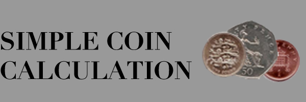

A simple application that given a number of pennies will calculate the minimum number of Sterling coins needed to make that amount.
Eg. 123p = 1 x £1, 1 x 20p, 1 x 2p, 1 x 1p
Eg. £1.25p = 1 x £1, 1 x 20p, 2 x 2p, 1 x 1p
If neither £, p, or decimals are used it is assumed the amount should be in pence. e.g. 675 is 675 pence
The amount £231.341 will be rounded to 231.34 and then the decimal removed and given in pence (23114)
Only the common £2, £1, 50p, 20p, 2p and 1p coins are acounted for.